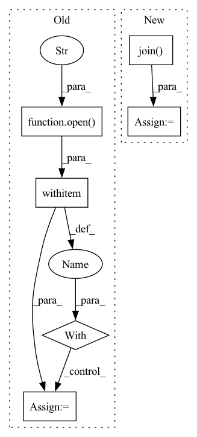

Pattern ID :10396
Before Change
class ListDataset(Dataset):
def __init__(self,path,is_train=True):
self.is_train = is_train
with open (path, "r") as file:
self.img_paths = file.readlines()
// 根据图片的路径得到 label 的路径, label 的存储格式为一个图片对应一个.txt文件
// 文件的每一行代表了该图片的 box 信息, 其内容为: class_id, x, y, w, h (xywh都是用小数形式存储的,相对坐标)
self.label_paths = [path.replace("JPGImages", "labels").replace(".jpg", ".txt") for path in self.img_paths]After Change
class ListDataset(Dataset):
def __init__(self, data_dir, split="trainval",is_train=False):
id_list_file = os.path.join( data_dir, "ImageSets/Main/{0}.txt".format(split))
self.ids = [id_.strip() for id_ in open(id_list_file)]
self.data_dir = data_dir
self.ignore_difficult = False
self.normalize = tvtsf.Normalize(mean=[0.485, 0.456, 0.406], std=[0.229, 0.224, 0.225])In pattern: SUPERPATTERN
Frequency: 4
Non-data size: 6
Instances Fragment ID: 36398779
Project Name: pangkun248/faster-rcnn-pytorch
Commit Name: b67dbca382cae8a68c770b70b0c92bdf25109029
Time: 2021-08-23
Author: 39581901+pangkun248@users.noreply.github.com
File Name: dataset.py
M Class Name: ListDataset
N Class Name: ListDataset
M Method Name: __init__(4)
N Method Name: __init__(3)
M Parent Class: Dataset
N Parent Class: Dataset
M File Name: dataset.py
N File Name: dataset.py
M Start Line: 13
M End Line: 17
N Start Line: 17
N End Line: 24
Before Change
Args:
data_path (list): path to pickle file.
with open (data_path, "rb") as data_file:
data = pickle.load(data_file)
self.data = [[torch.from_numpy(u).cuda() for u in s] for s in data]
self.seg_len = seg_lenAfter Change
self.seg_len = seg_len
for data_file in os.listdir(data_dir):
data_path = os.path.join( data_dir, data_file)
raw = pickle.load(open(data_path, "rb"))
data = [torch.from_numpy(d) for d in raw if len(d) > seg_len]
if len(data) < n_utterances:
continue Fragment ID: 36398777
Project Name: yistlin/dvector
Commit Name: 5e47d5f6e72c99fbd81923da2a611ae87d439032
Time: 2020-03-28
Author: yishen992@gmail.com
File Name: modules/utterances.py
M Class Name: Utterances
N Class Name: Utterances
M Method Name: __init__(4)
N Method Name: __init__(4)
M Parent Class: Dataset
N Parent Class: Dataset
M File Name: modules/utterances.py
N File Name: modules/utterances.py
M Start Line: 18
M End Line: 23
N Start Line: 20
N End Line: 34
Before Change
self.list_of_eligible_wave_paths = list(self.list_of_eligible_wave_paths)
self.waves = list()
for path in tqdm(self.list_of_eligible_wave_paths):
with open (path, "rb") as audio_file:
wave_orig, _ = sf.read(audio_file)
self.waves.append(self.preprocess_ap.audio_to_wave_tensor(wave_orig, normalize=True, mulaw=False))
print("{} eligible audios found".format(len(self.waves)))
After Change
self.waves.append(torch.tensor(wave))
torch.save(self.waves, os.path.join(cache_dir, "waves.pt"))
else:
self.waves = torch.load(os.path.join( cache_dir, "waves.pt") , map_location="cpu")
print("{} eligible audios found".format(len(self.waves)))
Fragment ID: 36398781
Project Name: digitalphonetics/ims-toucan
Commit Name: c762d97e04a62c8f3d839cc12c1f3c2b375bde9e
Time: 2021-10-28
Author: florian.lux@ims.uni-stuttgart.de
File Name: TrainingInterfaces/Spectrogram_to_Wave/HiFIGAN/HiFiGANDataset.py
M Class Name: HiFiGANDataset
N Class Name: HiFiGANDataset
M Method Name: __init__(6)
N Method Name: __init__(5)
M Parent Class: Dataset
N Parent Class: Dataset
M File Name: TrainingInterfaces/Spectrogram_to_Wave/HiFIGAN/HiFiGANDataset.py
N File Name: TrainingInterfaces/Spectrogram_to_Wave/HiFIGAN/HiFiGANDataset.py
M Start Line: 23
M End Line: 49
N Start Line: 17
N End Line: 54
Before Change
file_path = os.path.join(log_dir, camera_id, "objects_log", today + ".csv")
now = datetime.today()
violations = 0
with open (file_path, "r", newline="") as csvfile:
reader = csv.DictReader(csvfile)
for row in reader:
row_time = datetime.strptime(row["Timestamp"], "%Y-%m-%d %H:%M:%S")
if ((now - row_time).seconds / 60) < interval:After Change
violations = 0
if entity_type == "Camera":
file_paths = [os.path.join( log_dir, entity_info["id"], "objects_log", today + ".csv") ]
else:
// entity_type == "Area"
camera_ids = entity_info["cameras"] Fragment ID: 36398773
Project Name: neuralet/smart-social-distancing
Commit Name: cc83a5359249689566aff454deb74f361ee3c432
Time: 2020-10-23
Author: 42361379+renzodgc@users.noreply.github.com
File Name: libs/utils/notifications.py
M Class Name: AnonimousClass
N Class Name: AnonimousClass
M Method Name: check_violations(7)
N Method Name: check_violations(7)
M Parent Class:
N Parent Class:
M File Name: libs/utils/notifications.py
N File Name: libs/utils/notifications.py
M Start Line: 11
M End Line: 32
N Start Line: 23
N End Line: 46